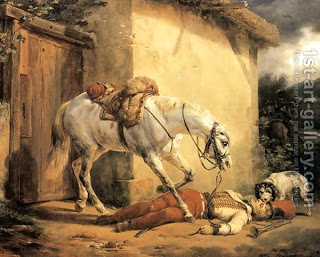

Yoma 23 - David and Shaul
On the previous page we mentioned that one should not count the Jews. Two people who did count were King Shaul and King David, and Talmud continues with them. King Shaul was without a blemish, and that exactly was his blemish. One needs to have a "basket of creepy-crawlies" behind his back, so that if he becomes haughty, they can tell him, "Looks where you come from!" So even though Shaul did less wrong acts, David, when he erred, cried and asked for forgiveness, and this counts more.
Also, Shaul renounced his honor and did not take revenge on Amalek, as a king should. Incidentally, any Sage who is not vengeful and does not keep a grudge like a snake - is not a true Sage. Now this last statement is problematic, because the Torah said not to take revenge!? - It only meant in monetary matters. But still we learned that one should be forgiving!? - Yes, if the offender comes to apologize, but otherwise the Sage should keep the offense in mind.
Before there was a lottery and people were still running up the ramp to claim the Temple services, once a priest, seeing the other one in front of him, thrust a knife and mortally wounded the him. They eulogized him right there, and then the father of the boy came and said that the death of his son should be the atonement, and also that his son was still alive, and so they should take the knife out of him and avoid ritual contamination.
The Talmud notices that ritual purity was more important to them than bloodshed, and asks what happened: did the purity become more important or did the bloodshed become cheaper in their eyes, and concludes that it was the latter.
Art: The Wounded Trumpeter by Horace Vernet